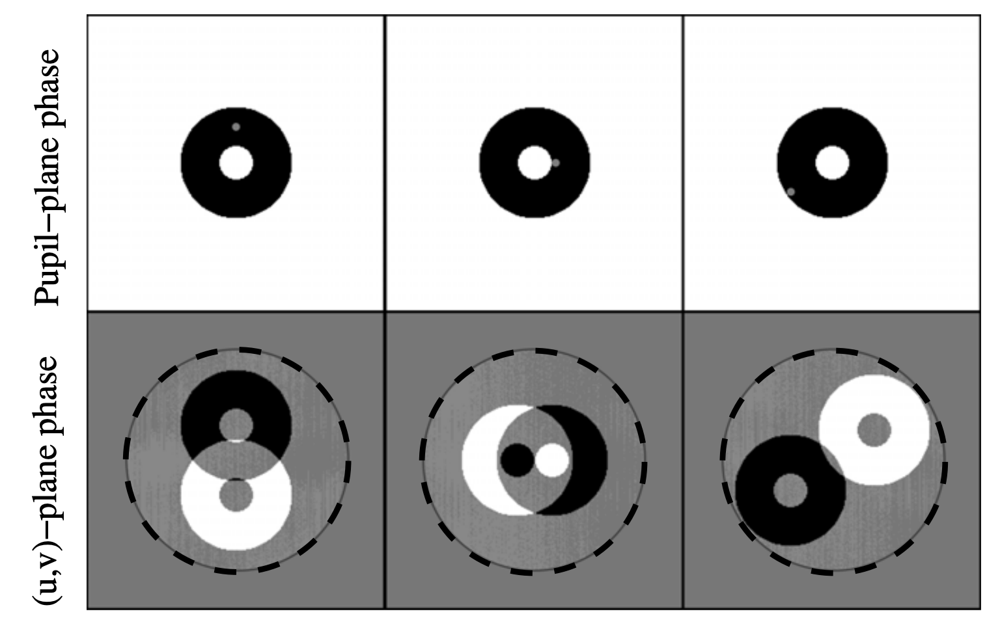

morphine
Phase Retrieval, Design, and Kernel Phase with Automatic Differentiation
Benjamin Pope, UQ
benjaminpope.github.io/talks/fizeau/fizeau.html
Work in collaboration with Sydney students
Alison Wong (PhD)
and Louis Desdoigts (Honours),
Yinzi Xin (Caltech),
and faculty Peter Tuthill (Sydney)
and Laurent Pueyo (STScI).
Phase Problems in Direct Imaging
The main limitation on direct imaging is from wavefront aberrations which corrupt phase information.

Problem 1: Phase Retrieval
Given an image, what were the aberrations in the telescope?

Problem 2: Phase Design
Given an objective, how do we engineer an optimal PSF?

Phase Apodized Coronagraph: Por, 2019, arXiv:1908.02585
Problem 3: Kernel Phase
How do we correct phase errors in postprocessing?
Automatic Differentiation
What if we want to linearize an arbitrary optical system?
Optics is mathematically like machine learning: matrix multiplications and simple nonlinear functions
Can use automatic differentiation!
Autodiff is not finite differences, and it is not symbolic differentiation.
Using the chain rule you can decompose almost-arbitrary code!
Autodiff is the enabling technology for deep neural networks - you use the chain rule to take derivatives of nearly-arbitrary numerical functions.
Implementations in TensorFlow, Theano, PyTorch, Julia...
Here we use Google Jax, which resembles NumPy, to rewrite the Fourier/Fresnel optics code poppy to take derivatives
...Morphine!
Jax permits
- Just-in-time 'jit' compilation - so faster than normal poppy.
- Accelerated Linear Algebra (XLA) - including on GPUs
- Automatic differentiation!
Phase Retrieval
Alison Wong - phase retrieval and design by gradient descent

Phase Design

Coronagraph Phase Mask Design - try it yourself!
Toliman Mission
Detect planets with μ-arcsec astrometry
Astrometric precision proportional to gradient energy
Use diffractive optic to maximize this subject to constraints


Louis Desdoigts - sensitivity of Toliman to Zernike modes

Basis used in CLIMB
Kernel Phase
Correlate baselines around a triangle of receivers

Kernel phase is a generalization of closure phase to arbitrary pupils.
Take the SVD of a phase error transfer matrix - separate into good and bad observables
Linearize response to phase noise - need derivative
Jacobian matrix is gradient of vector function \(\mathbf{y}(\mathbf{\theta})\):
\[ J_{i,j} \equiv \frac{\partial{y_i}}{\partial{\theta_j}} \\ \]
The Martinache 2010 phase transfer matrix \(\mathbf{A}_\phi\) is an analytically determined Jacobian, mapping pupil phases to their u, v effects.
Check out this notebook!
The Future
What else can we use this for?